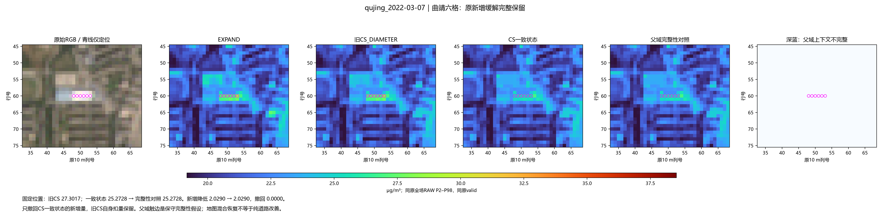
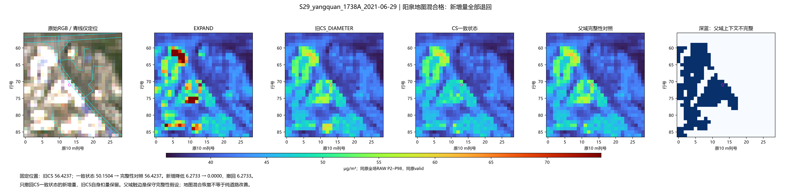
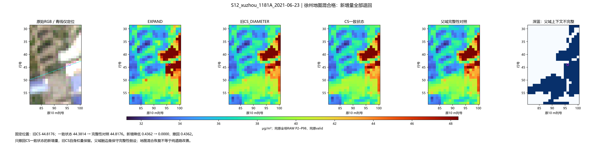
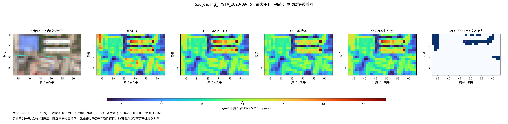
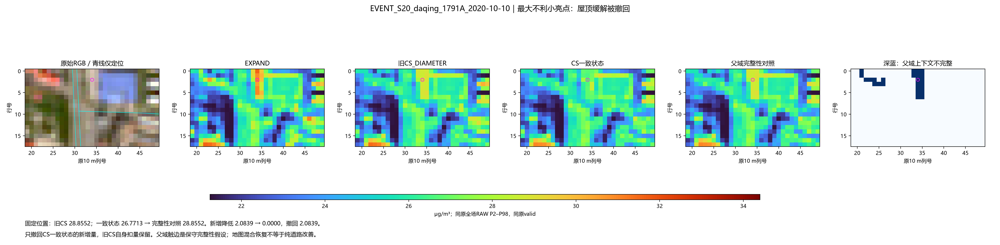
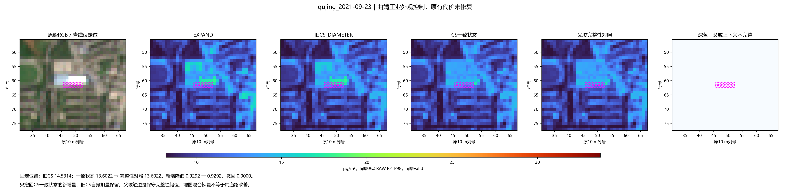

206场完成；0新拟合。曲靖六格新增缓解保留，但季节组约39%新增处理被撤回，2033个小亮格回升。本页并列恢复与最大代价。
实际结论 · 唯一机制 · 固定例 · 全组 · 道路/工业完整表
qujing_2022-03-07

S29_yangquan_1738A_2021-06-29

S12_xuzhou_1181A_2021-06-23

S20_daqing_1791A_2020-09-15

EVENT_S20_daqing_1791A_2020-10-10

qujing_2021-09-23
